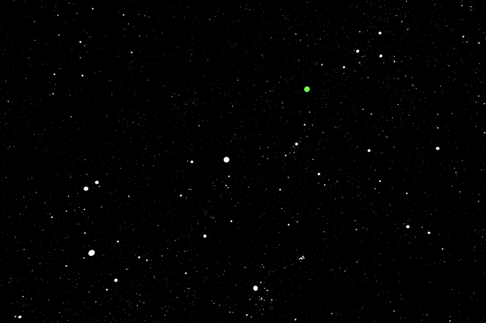
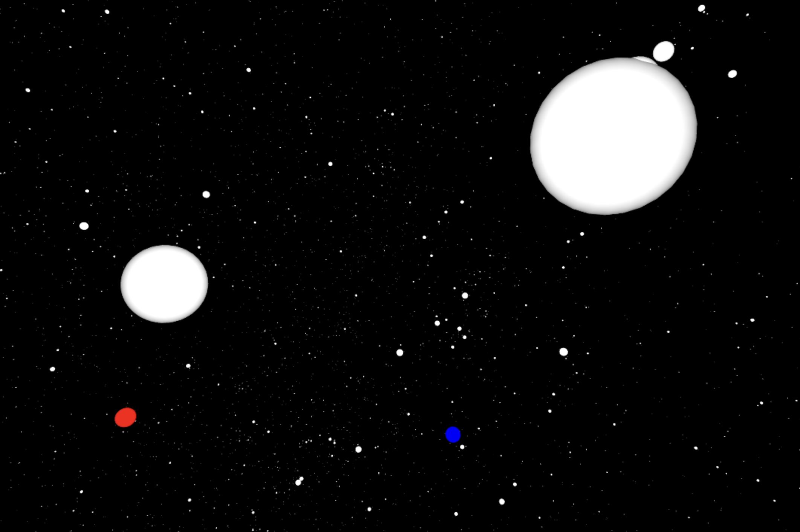

Projects
Orbital Elements
If I told you there is a satellite out in space, and that I know its precise location and velocity at a given moment in time, would you be able to tell me where that satellite is going to be in the future? Let's say that the satellite is exactly 6000 km above your head right now, going in any direction you want at 6 km/s, and that is all the information you have, is there a way for you to get that satellite's exact path? Yes there is.

What you see above is a picture of a navigable real time 3D animation showing just that. The code takes two parameters, the position vector of the satellite and the velocity vector of the satellite, and outputs all of the relevant parameters that uniquely specify its orbit (also known as the orbital elements). Parameters such as the eccentricity of the orbit, its inclination, semi-major axis, and others. It also displays a neat 3D animation of what the orbit looks like. The code runs in any browser using the GlowScript VPython API, and you can see it for yourself here.
RUN CODEThe reason I wrote this code was to help me and other students visualize what real orbits really look like. All so often we see orbits displayed in a 2D plane that it is easy to forget that real orbits are tridimensional. And so when we start talking about things like the argument of periapsis or the longitude of the ascending node, students tend to be confused. Another motivation behind this code was to have a convenient way to compute the orbit of a satellite from a single observation of its position and velocity.
Planetarium with Interstellar Positional Astronomy (PIPA)
Have you ever wondered what the night sky from other stars would look like? And what does the Sun look like from another star? I created a program that does just that. PIPA (Planetarium with Interstellar Positional Astronomy) is a free open source planetarium program based entirely on Python3. It uses the astrometric data from the High Precision PARallax COllecting Satellite (Hipparcos) mission to show in 3D what the sky from other stars would look like.
The image above is a portion of the sky as seen from Alpha Centauri A (HIP 71683). Our star, the Sun, is shown in green for reference.

From Barnard's Star (HIP 87937) the Sun is in Orion. Sirius, shown in light blue, is shifted closer to Orion but still belongs to Canis Major. Betelgeuse is shown in red and Rigel is shown in blue.
From Maia (HIP 17573), the fourth-brightest star in the Pleiades open star cluster (Messier 45), the sky is just insane. Orion is gone, and the seven sisters are seriously bright.
CODEYou can click the button above to access the PIPA project repository. The python code is available there, together with detailed instructions on how to properly install and run the program. This project made use of data from the High Precision PARallax COllecting Satellite (Hipparcos) mission. It specifically utilized the data published in: ESA, 1997, The Hipparcos and Tycho Catalogues, ESA SP-1200. For further information on the Hipparcos mission and data, visit ESA's Hipparcos page.